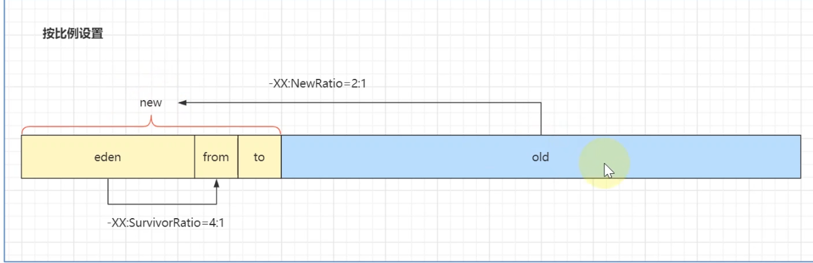

JVM内存结构

先将java代码转换为java字节码，然后通过类加载的机制将字节码加载到内存中的方法区中，执行中类的加载类似于懒加载（延迟加载），即只有当线程执行时调用到了没有的类才会通过双亲委派区查找需要的类去加载，由类new出来的成员对象存储在JVM内存的堆中，而局部变量和方法参数等占用的内存在虚拟机栈中，一个线程一个栈（比如main）
方法分为两类：一类是普通的java方法，另一类是java借助于操作系统实现的方法，第二种叫做本地方法，存储的位置是本地方法栈，和普通方法位置不一样，这只是约定俗成，实际存储都是在一个统一的栈中，只不过可以细分。
程序计数器用来记录当前线程进行到哪一行代码，栈和程序计数器属于线程，解决比如线程上下文切换
在执行引擎上，解释器解释字节码为机器码，而对于热点代码用即时编译器进行编译后放入缓存中，不需要每次都进行解释执行
类加载的顺序：
先执行父类的静态块、静态变量（按语句顺序进行加载），再加载子类的静态块和变量，注意这里的加载是将代码片段加载到方法区中但没有执行，所有的方法不管是否静态都要被调用才会执行，只有静态块是不受调用就可执行的，只不过静态资源已经提前加载好了，当方法中调用了其他类或者调用了非静态成员或方法，才开始加载需要的类。
加载父类的实例成员和代码块，再执行父类的构造方法，再加载子类的实例成员和代码块，最后才调用子类的构造方法来创建对象（注意加载非静态的代码必须在被调用或创建时才会被加载，不调用不加载）
要创建某个类的对象，要先干完所有静态的活，最后再调用构造方法，如果需要在main方法调用之前就执行一些语句，只能把它放在static块中，main方法的执行顺序是在静态块和变量初始化完之后，JVM进行调用main，main中有其他需要的类，才产生了被需要类实例对象方法和构造方法的加载与执行。
内存溢出：
除了程序计数器之外，都有可能产生内存溢出（主要是变成失误）
OutofmemoryError:
堆内存耗尽：对象越来越多，且不能被垃圾回收
方法区内存耗尽：加载的类越来越多，或者在运行中加载的越来越多。
虚拟机栈累计：每个线程最大占用1m内存，线程越来越多又不销毁
StackOverFlowError
栈内部方法调用次数过多（比如循环调用死循环了），是在一个线程内的栈满了
方法区，永久代，元空间：
方法区是JVM规范定义的一块内存，而永久代是HOTSpot虚拟机对JVm规范的一种实现1.8之前的，1.8之后的实现是元空间，元空间中存储的才是类的元数据，在加载类的时候，会将类的元数据加载到元空间中，会在堆中生成类的Class对象，通过class对象反射引用元空间中的元数据来完成new实例对象等操作，当实例对象或class对象均不被引用时，当垃圾回收时将无用的对象进行回收，此时仍不会将元数据进行卸载，当类加载器被销毁的时候，才会把类加载器以前加载过的对应的类的元数据进行删除（当然一般是自定义的类加载器被销毁）
JVM常用参数：
（图上标出的Ratio是默认比例）（默认单位都是兆比特即mb简写为m）

-Xmx：最大堆的限制大小
-Xms：初始的堆的大小
-Xmn：年轻代所分配空间大小
-XX:survivorRatio,-XX后面跟的都是内存设置参数，例如该参数代表伊甸园：幸存者（from或to也就是一半）是几比几，from和to的比例始终是一比一
JVM堆内存分为新生代和老年代（当然还有未分配的保留空间）
新生代又分为： eden伊甸园 survivor幸存者 （幸存者又分为from和to）
标记清除：直接对不需要的对象进行内存清除，会产生内存碎片
标记整理：在清除的基础上进行改进，对剩余未清理的内存进行整理，增大可利用的连续空间（减少内存碎片）
标记复制：空对象清理之后，将未清理的内存放入到to内存区中，每一次复制完之后，from和to区进行交换（名义上进行交换），标记复制的速度比标记整理要快，仅需复制到新空间之后直接把旧空间清空即可，但是需要开辟一块额外的空间，占用内存
当对象在幸存者区一定清理次数后，可以升级为老年代（最少为15次，但是大对象和新生代空间紧张可以提前）
方法区在逻辑上是独立的，但是在物理上还是一片共享的区域，可以说是堆内存，但是方法区又叫非堆，用来明确和堆的区别，在逻辑上且JDK1.7及之前，（持久代）永久代是方法区的一片区域，其中包括运行时常量池和字符串常量池等，运行时常量池里存储着字面值，变量，代码片段（.class文件）等等，1.8之后变为元空间，元空间是方法区的实现，里面存储着class字节码文件，程序执行时会动态从元空间中映射相应的代码去执行，在类加载时代码片段被加载到元空间中，直到虚拟机关闭元空间才卸载代码片段。
finalize和GC
当Object失去GCROOTS的引用链时，会进行第一次标记，然后判断Object的finalize方法是否被重写或被执行过一次，注意finalize也只能被执行一次，所以只有一次复活的机会，如果满足上述条件，就会将Object放入队列F-Queue，由低优先级线程进行执行Queue中对象的finalize方法，执行完之后判断此时是否可达（即判断是是否有复活的机会），若可达则将对象移出即将被回收的内存，不可达则进行第二次标记，被第二次标记的对象会在下一次GC的时候被回收
如果在第一次标记后发现没有重写finalize或者对象的finalize已经被执行（后者说明该对象曾经被复活过一次），那么直接将该对象二次标记，等待GC
扩展：final关键字
引用（变量）被final修饰时，该引用不能再改变，即不能执行其他的对象（即只想地址不可变），但是只想地址的对象的内容是可变的，所以可以用其他的变量去修改final对象的值
JDK自带命令行工具
jps：查看正在运行的java虚拟机进程
jstat：查看虚拟机运行时信息
jstack：查看虚拟机运行时刻栈的线程快照信息
jmap：查看或导出堆的快照信息
jhat：JDK自带的堆分析工具
jinfo：实时查看和调整JVM的各项参数
可达性分析法：
HotSpot使用的就是这种方法，通过GCroots枚举判断
那如何找到GCROOTS呢？
1 | 两种方法： |
保守GC的成本太高，因为要进行遍历而且需要时间，而准确GC时间很低，可以快速定位
如何选定安全点？
安全点太多，GC 过于频繁，增大运行时负荷；安全点太少，GC 等待时间太长。
一般会在如下几个位置选择安全点：
1、循环的末尾
2、方法临返回前
3、调用方法之后
4、抛异常的位置
如何在 GC 发生时，所有线程都跑到最近的 Safe Point 上再停下来？
主要有两种方式：
抢断式中断：在 GC 发生时，首先中断所有线程，如果发现线程未执行到 Safe Point，就恢复线程让其运行到 Safe Point 上。
主动式中断：在 GC 发生时，不直接操作线程中断，而是简单地设置一个标志，让各个线程执行时主动轮询这个标志，发现中断标志为真时就自己中断挂起。Thread的interrupt方法就是主动式中断。
JVM 采取的就是主动式中断。轮询标志的地方和安全点是重合的。
内存泄漏
除了最常见的ThreadLocal的value内存泄漏（长生命周期对象持有段生命周期对象）之外，还有HashSet内存泄漏，比如HashSet
其实集合类才是最常见的，比如ArrayList、LinkedList，静态容器的生命周期和程序是一致的，一旦变量放入到了容器中，那么只要程序结束之前，里面的变量都不会被释放.
对于垃圾回收：是仅对于堆和方法区来说的，栈直接就是压栈弹栈，是没有垃圾这一概念的，所以也不需要进行垃圾回收，而方法区的一般是对常量或者代码片段，类信息等比较静态的资源的垃圾回收，所以用的比较少。
这里说一下Java引用类型
强引用：
最常见的引用，一般也是引起内存泄露的主要引用
软引用：
使用SoftReference 进行实现，当内存不足才会回收，所以一般用在内存敏感的区域。
弱引用·：
使用WeakReference 类实现，生命周期比软引用更短，Gc一运行就回收
虚引用：
使用PhantomReference实现，它不能单独使用，必须和引用队列联合使用。虚引用的主要作用是跟踪对象被垃圾回收的状态。
JVM参数
-XX是对JVM系统层面的配置，一般是什么日志信息，或者垃圾回收器配置
而非-XX都是对应用层面的配置吗，比如某个空间的大小配置。
比如：Boolean类型XX参数，注意JVM命令是区分大小写的
公式：-XX:+ 或者-XX:- 某个属性值（+表示开启，-表示关闭）
案例：
1）是否打印GC收集细节
-XX:+PrintGCDetails
-XX:-PrintGCDetails
JVM32位和64位
32位JVM最大可以支持 2^32， 即 4GB内存，其实和操作系统是类似的，32位的操作系统最大也只能读取4G的内存，多出的内存将不能被识别，因为不支持，所以说32位JVM的最大支持内存正好是32位操作系统的最大值，一般来说32位JVM的堆内存是小于4G的，也就是小于物理内存（当前可读取的最大内存也就相当于了物理内存）
一般来说，如果不适用Java官方设置的默认参数的话，那么堆的大小最好设置为物理内存的四分之三
如果是32位的JVM运行在64位的系统上，那么（JVM）理论上堆的大小可以达到4G，但是其他内存区域肯定得占一些空间，所以理论上是4G
如何查看Java程序使用内存的情况
这里主要借助的是一个RunTIme类，这个类代表应用程序的运行环境。
可以通过getRuntime()获取当前应用程序的运行环境对象，拿到这个对象之后就可以调用各种方法去获取或者操作运行环境的参数，比如运行Java程序，获取的运行环境就是JVM的。
1 | //获取JVM的空闲内存（单位都是byte） |
如果您喜欢此博客或发现它对您有用，则欢迎对此发表评论。 也欢迎您共享此博客，以便更多人可以参与。 如果博客中使用的图像侵犯了您的版权，请与作者联系以将其删除。 谢谢 ！